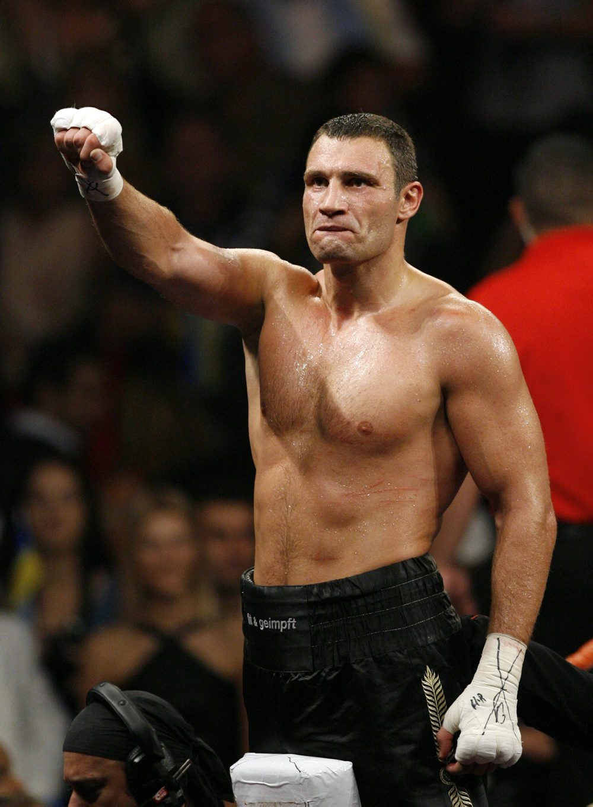

Віталій Володимирович Кличко - народ. 19 липня 1971, с. Біловодське, Чуйська область, Киргизька РСР — український боксер, Шестиразовий чемпіон світу з кікбоксингу (двічі серед аматорів і чотири рази серед професіоналів). Чемпіон світу з боксу у важкій ваговій. Протягом кар'єри здобув перемогу в 15 боях за титул чемпіона світу у важкій вазі. Срібний призер чемпіонату світу з боксу серед аматорів. Єдиний боксер, якому вручили пояс «Вічного» чемпіона світу у важкій вазі за версією WBC. Триразовий чемпіон України з боксу серед аматорів. Чемпіон I Всесвітніх ігор військовослужбовців у важкій ваговій категорії (1995 рік). 11 червня 2018 року першим з громадян України включений до Міжнародної зали боксерської слави.